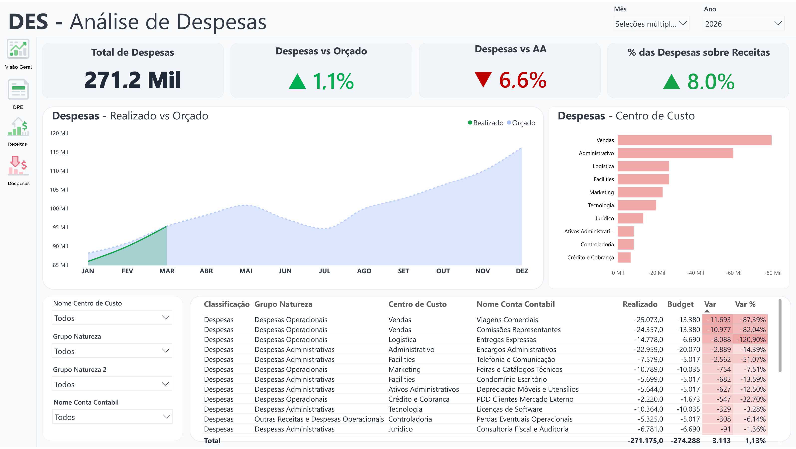
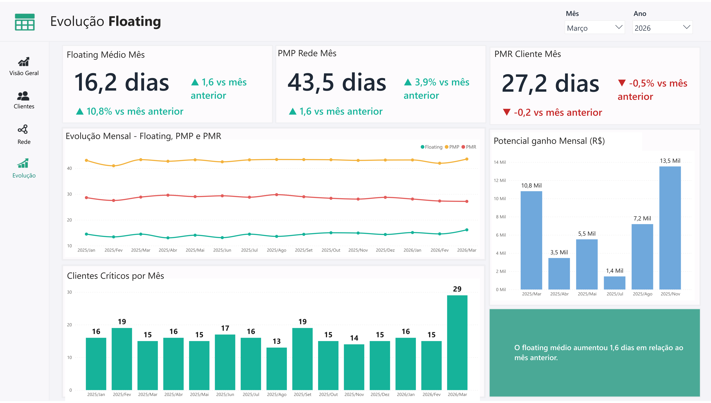

Performance
Melhoria de resultados através de indicadores claros e acompanhamento contínuo da operação.
Transformo dados financeiros e comerciais em decisões estratégicas, gerando mais controle, confiabilidade e impacto real nos resultados.
+15 anos de experiência em controladoria e análise de dados, com sólida atuação em Power BI, integração e estruturação de informações para suporte à decisão e análise de desempenho.
Profissional de Business Intelligence com mais de 15 anos de experiência em dados financeiros e comerciais, atuando na transformação de informações em suporte estratégico para tomada de decisão.
Experiência sólida em controladoria, análise de desempenho e acompanhamento de resultados, com atuação em DRE, orçamento, forecast e definição de metas comerciais.
Atuo na estruturação de dados e indicadores que garantem confiabilidade das informações, apoiam o fechamento contábil e proporcionam mais clareza para decisões seguras e orientadas a resultado.
Melhoria de resultados através de indicadores claros e acompanhamento contínuo da operação.
Dados estruturados e confiáveis como base para decisões estratégicas.
Gestão de metas e performance com visão clara do que impacta o resultado.
Transformação de dados em decisões mais rápidas, seguras e orientadas ao negócio.
Soluções em Business Intelligence voltadas à gestão financeira, performance comercial e tomada de decisão com base em dados confiáveis e estruturados.
Desenvolvimento de dashboards que proporcionam visibilidade clara do negócio, destacando indicadores-chave para acompanhamento de resultados e apoio à tomada de decisão.
Organização e modelagem de dados para construção de bases consistentes, confiáveis e preparadas para análise, garantindo maior segurança na interpretação das informações.
Integração de diferentes fontes de dados e automação de processos, reduzindo retrabalho, aumentando eficiência operacional e garantindo informações sempre atualizadas.
Estudos de caso desenvolvidos em Power BI com foco em gestão financeira, performance comercial e apoio executivo à decisão.

DRE, custos, orçamento, realizado x orçado e indicadores estratégicos para controle gerencial.
Ver projeto completo


Metas, vendas, acompanhamento de resultados, comparativos e análise de desempenho comercial.
Ver projeto completo
Indicadores consolidados, visão gerencial e leitura rápida para apoio à tomada de decisão.
Ver projeto completoMeu diferencial está na estruturação de dados centralizados, confiáveis e padronizados, indo além da visualização e garantindo consistência real entre todas as análises.
Com isso, evito divergências entre relatórios, reduzo retrabalho e asseguro que todos os indicadores — financeiros, comerciais e gerenciais — sejam construídos sobre uma única lógica de dados.
O resultado é um ambiente mais eficiente, escalável e confiável, que sustenta decisões mais seguras e orientadas ao negócio.
Base única de dados • Indicadores consistentes • Menor retrabalho • Mais confiança nas decisões
Estou disponível para oportunidades, projetos e parcerias estratégicas nas áreas de Business Intelligence, dados, controladoria e performance comercial, contribuindo com soluções orientadas a resultados e tomada de decisão.